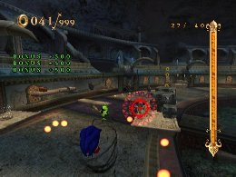

Useful skills for maximizing Experience Points
Advanced Strategies
There are some skills that allow you to earn Experience Points during missions by fulfilling certain conditions. Most of these, however, are powerful skills that are relatively difficult to obtain.
Experience Points earned in this manner are shown in the Experience Bonus section of the results screen.
Expert Attack
You can obtain this skill by getting the Gold Medal on Pirate Storm: Die Hard Challenge.
You will earn Experience Points each time you do a Homing Attack.
This skill gives you Experience Points for using a move you use frequently anyway, so you can earn Experience without even trying.
Expert Drift
You can obtain this skill by getting the Gold Medal on Pirate Storm: No Pearls.
You will earn Experience Points each time you drift around a corner.
You don’t need to use any special controls to drift, but you need to have enough speed as you approach the corner. Not too many stages have sharp corners, but those that do have a lot of them, making this skill very useful on those stages.

If you press and hold the 2 Button while drifting, you can jump immediately after the drift. This will allow you to avoid any traps that lurk right after a sharp corner without having to brake.
Homing Bonus
You can obtain this skill by getting the Gold Medal on Night Palace: Head to Head.
You will earn Experience Points each time you defeat multiple Enemies with Homing Attacks.
Unlike with Expert Attack you will need to defeat Enemies, but you will be rewarded with even more Experience Points. This is a great skill to use in places with large, concentrated groups of enemies.

Chains will be reset if you land, slide, or jump in between.
Even if you do a homing attack at springs or treasure boxes the chains will not be stopped.
20 experience points with 2 chains
50 experience points with 3 chains
100 experience points with 4 chains
150 experience points with 5 chains
200 experience points for every 6-9 chains
300 experience points for every 10-15 chains
500 experience points for every 16 or over chains.
Ring of Zero
You can obtain this skill by getting the Gold Medal on Skeleton Dome: Rampage.
If you earn Experience Points with an action while you have zero Rings, you receive double the number of Experience Points.
This approach is geared toward advanced players, as the skill does nothing on its own, and the “zero Rings” condition is a very risky one.
Chain Bonus
You can obtain this skill by getting the Gold Medal on Night Palace: Rampage.
You will earn Experience Points for collecting Rings in succession.
As in the “Get a X-Ring chain” missions, once the Chain Count begins, you can earn Experience Points by building longer chains within the time limit. This requires a high level of technical skill, but it produces great results on the “Get a X-Ring chain” missions.


Chains will work by taking the next ring within 1 second from the last one.
100 experience points with 20-24 chains
200 experience points with 25-29 chains
300 experience points with 30-34 chains
400 experience points with 35-39 chains
500 experience points with 40-44 chains
700 experience points with 45-49 chains
1000 experience points with over 50 chains.
If your focus is to gain experience points, it will be efficient to stop at 50 chains.
Collection Present
You can obtain this skill by getting the Gold Medal in the Alf Layla wa Layla battle.
The number of Rings you can collect on a stage is limited to 100, and when you have 100 Rings you will earn Experience Points for distance traveled.
This requires a high level of technical skill, since you must play without making any mistakes after reaching 100 Rings. But if you’re able to use this skill well, you can earn large amounts of Experience Points.
Sub C-Present
This is the Sub-version of the Collection Present skill obtained at Level 55.
The basic function is the same as Collection Present, but in this case, the Soul Gauge is consumed when you earn Experience Points. This means that you can’t earn too many Experience Points unless you have energy built up in your Soul Gauge.
« Maximum scores for the first long courses in each world | Advanced Strategies | Enemy Strategies »
 RSS
RSS